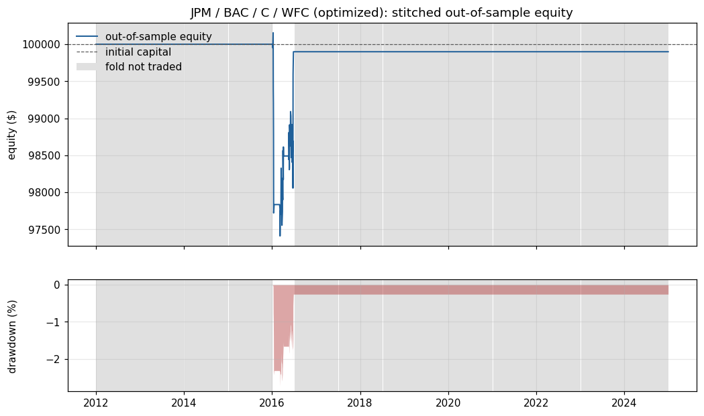
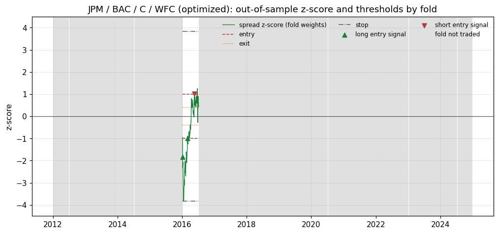
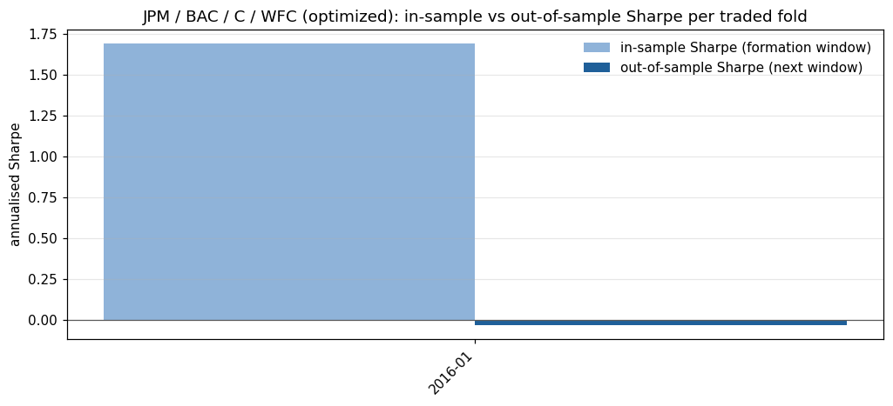

JPM / BAC / C / WFC: walk-forward optimized run
Out-of-sample Sharpe -0.01 (95% block-bootstrap interval -0.54 to 0.37), probabilistic Sharpe ratio 0.491. The result is not statistically distinguishable from zero skill at the 95% level. Only 3 closed round trips, so per-trade statistics are imprecise.
Headline statistics (out-of-sample only)
| Out-of-sample period | 2012-01-03 to 2024-12-31 (3269 days) |
|---|---|
| Total return | -0.10% |
| CAGR | -0.01% |
| Annualised volatility | 0.79% |
| Sharpe (95% bootstrap interval) | -0.01 (-0.54 to 0.37) |
| Probabilistic Sharpe ratio | 0.491 |
| Sortino | -0.01 |
| Max drawdown (longest spell, days) | -2.74% (2258) |
| Calmar | -0.00 |
| Skewness / kurtosis of daily returns | 6.02 / 430.76 |
| Folds traded | 1 of 26 |
|---|---|
| Skipped: not cointegrated / not hedged / half-life / no in-sample edge | 25 / 0 / 0 / 0 |
| Closed round trips | 3 |
| Win rate (per round trip) | 66.7% |
| Profit factor | 0.95 |
| Average trade return on equity | -0.022% |
| Average holding period | 17.7 days |
| Stop exits: z-score / loss / time | 1 / 0 / 0 |
| Time in market | 1.6% |
| Annual turnover (x equity) | 0.4 |
| Trading costs / borrow costs ($) | 285.97 / 51.28 |
Charts



Folds
| Fold | Trading window | Trace stat / 5% crit | Half-life (days) | Status | Entry / exit / stop / lookback | In-sample Sharpe | In-sample deflated Sharpe | OOS return | OOS Sharpe | OOS trades |
|---|---|---|---|---|---|---|---|---|---|---|
| 0 | 2012-01-03 to 2012-07-02 | 26.99 / 47.85 | 25.5 | not cointegrated (trace 26.99 <= critical 47.85) | n/a | n/a | 0.00% | n/a | 0 | |
| 1 | 2012-07-03 to 2013-01-03 | 33.85 / 47.85 | 23.0 | not cointegrated (trace 33.85 <= critical 47.85) | n/a | n/a | 0.00% | n/a | 0 | |
| 2 | 2013-01-04 to 2013-07-05 | 44.48 / 47.85 | 13.0 | not cointegrated (trace 44.48 <= critical 47.85) | n/a | n/a | 0.00% | n/a | 0 | |
| 3 | 2013-07-08 to 2014-01-03 | 42.50 / 47.85 | 11.4 | not cointegrated (trace 42.50 <= critical 47.85) | n/a | n/a | 0.00% | n/a | 0 | |
| 4 | 2014-01-06 to 2014-07-07 | 46.08 / 47.85 | 9.8 | not cointegrated (trace 46.08 <= critical 47.85) | n/a | n/a | 0.00% | n/a | 0 | |
| 5 | 2014-07-08 to 2015-01-05 | 40.74 / 47.85 | 10.9 | not cointegrated (trace 40.74 <= critical 47.85) | n/a | n/a | 0.00% | n/a | 0 | |
| 6 | 2015-01-06 to 2015-07-07 | 43.55 / 47.85 | 10.5 | not cointegrated (trace 43.55 <= critical 47.85) | n/a | n/a | 0.00% | n/a | 0 | |
| 7 | 2015-07-08 to 2016-01-05 | 38.06 / 47.85 | 11.2 | not cointegrated (trace 38.06 <= critical 47.85) | n/a | n/a | 0.00% | n/a | 0 | |
| 8 | 2016-01-06 to 2016-07-06 | 52.87 / 47.85 | 14.8 | traded | 1.00 / 0.41 / 3.82 / 127 | 1.69 | 0.876 | -0.10% | -0.03 | 3 |
| 9 | 2016-07-07 to 2017-01-04 | 38.52 / 47.85 | 16.4 | not cointegrated (trace 38.52 <= critical 47.85) | n/a | n/a | 0.00% | n/a | 0 | |
| 10 | 2017-01-05 to 2017-07-06 | 36.21 / 47.85 | 18.0 | not cointegrated (trace 36.21 <= critical 47.85) | n/a | n/a | 0.00% | n/a | 0 | |
| 11 | 2017-07-07 to 2018-01-04 | 35.33 / 47.85 | 11.1 | not cointegrated (trace 35.33 <= critical 47.85) | n/a | n/a | 0.00% | n/a | 0 | |
| 12 | 2018-01-05 to 2018-07-06 | 40.80 / 47.85 | 12.9 | not cointegrated (trace 40.80 <= critical 47.85) | n/a | n/a | 0.00% | n/a | 0 | |
| 13 | 2018-07-09 to 2019-01-07 | 45.15 / 47.85 | 17.6 | not cointegrated (trace 45.15 <= critical 47.85) | n/a | n/a | 0.00% | n/a | 0 | |
| 14 | 2019-01-08 to 2019-07-09 | 27.18 / 47.85 | 16.7 | not cointegrated (trace 27.18 <= critical 47.85) | n/a | n/a | 0.00% | n/a | 0 | |
| 15 | 2019-07-10 to 2020-01-07 | 26.32 / 47.85 | 24.1 | not cointegrated (trace 26.32 <= critical 47.85) | n/a | n/a | 0.00% | n/a | 0 | |
| 16 | 2020-01-08 to 2020-07-08 | 27.86 / 47.85 | 18.1 | not cointegrated (trace 27.86 <= critical 47.85) | n/a | n/a | 0.00% | n/a | 0 | |
| 17 | 2020-07-09 to 2021-01-06 | 31.94 / 47.85 | 14.4 | not cointegrated (trace 31.94 <= critical 47.85) | n/a | n/a | 0.00% | n/a | 0 | |
| 18 | 2021-01-07 to 2021-07-08 | 32.84 / 47.85 | 13.2 | not cointegrated (trace 32.84 <= critical 47.85) | n/a | n/a | 0.00% | n/a | 0 | |
| 19 | 2021-07-09 to 2022-01-05 | 25.71 / 47.85 | 17.9 | not cointegrated (trace 25.71 <= critical 47.85) | n/a | n/a | 0.00% | n/a | 0 | |
| 20 | 2022-01-06 to 2022-07-08 | 34.09 / 47.85 | 39.7 | not cointegrated (trace 34.09 <= critical 47.85) | n/a | n/a | 0.00% | n/a | 0 | |
| 21 | 2022-07-11 to 2023-01-06 | 37.57 / 47.85 | 26.0 | not cointegrated (trace 37.57 <= critical 47.85) | n/a | n/a | 0.00% | n/a | 0 | |
| 22 | 2023-01-09 to 2023-07-11 | 31.45 / 47.85 | 17.0 | not cointegrated (trace 31.45 <= critical 47.85) | n/a | n/a | 0.00% | n/a | 0 | |
| 23 | 2023-07-12 to 2024-01-09 | 29.33 / 47.85 | 12.7 | not cointegrated (trace 29.33 <= critical 47.85) | n/a | n/a | 0.00% | n/a | 0 | |
| 24 | 2024-01-10 to 2024-07-11 | 43.81 / 47.85 | 10.3 | not cointegrated (trace 43.81 <= critical 47.85) | n/a | n/a | 0.00% | n/a | 0 | |
| 25 | 2024-07-12 to 2024-12-31 | 29.62 / 47.85 | 17.5 | not cointegrated (trace 29.62 <= critical 47.85) | n/a | n/a | 0.00% | n/a | 0 |
Transaction-cost sensitivity
Fold decisions (weights, parameters, signals) are frozen; only the per-side cost changes.
| Cost (bps per side) | Total return | Sharpe | Max drawdown |
|---|---|---|---|
| 0.0 | 0.19% | 0.02 | -2.64% |
| 5.0 | -0.10% | -0.01 | -2.74% |
| 10.0 | -0.39% | -0.03 | -2.84% |
| 20.0 | -0.97% | -0.09 | -3.03% |
Daily VaR and Expected Shortfall
| Method | Confidence | VaR | Expected shortfall |
|---|---|---|---|
| historical | 95% | -0.000% | 0.002% |
| parametric | 95% | 0.082% | 0.102% |
| cornish_fisher | 95% | -0.465% | n/a |
| historical | 99% | -0.000% | 0.002% |
| parametric | 99% | 0.115% | 0.132% |
| cornish_fisher | 99% | 4.177% | n/a |
Data provenance
| Source this run | snapshot |
|---|---|
| Snapshot file | data/snapshots/JPM_BAC_C_WFC_2010-01-01_2025-01-01.csv |
| Snapshot SHA-256 | fd16883c1f79db3ea0998346b85341c7a0fa3ac3151e79c87df3b9743ced5cc7 |
| Rows / first date / last date | 3774 / 2010-01-04 / 2024-12-31 |
| Dates dropped while aligning tickers | 0 |
| Downloaded (UTC) | 2026-09-11T19:17:11+00:00 |
| Daily moves above 40% (log) flagged | 0 |
Protocol
| path | config/config.yaml |
|---|---|
| sha256 | 23f85374f30bb0c83cd9b876dd88aa8d41da9055559d08ce09ebe1dd0100ae7a |
| data.snapshot_dir | data/snapshots |
| data.max_missing_fraction | 0.02 |
| walk_forward.formation_days | 504 |
| walk_forward.trading_days | 126 |
| walk_forward.significance | 0.05 |
| walk_forward.det_order | 0 |
| walk_forward.k_ar_diff | 1 |
| walk_forward.require_cointegration | True |
| walk_forward.max_half_life_days | 126 |
| walk_forward.max_net_exposure | None |
| strategy.entry_z | 2.0 |
| strategy.exit_z | 0.5 |
| strategy.stop_z | 4.0 |
| strategy.lookback | 60 |
| backtest.initial_capital | 100000 |
| backtest.gross_exposure | 1.0 |
| backtest.target_volatility | None |
| backtest.max_gross | 1.0 |
| backtest.stop_loss_fraction | None |
| backtest.max_holding_bars | None |
| backtest.cost_bps | 5.0 |
| backtest.borrow_bps_annual | 50.0 |
| backtest.execution_lag | 1 |
| optimization.space.entry_z | 1.0, 3.0 |
| optimization.space.exit_fraction | 0.0, 0.8 |
| optimization.space.stop_offset | 0.5, 3.0 |
| optimization.space.lookback | 20, 252 |
| optimization.n_calls | 40 |
| optimization.n_initial_points | 12 |
| optimization.min_trades | 3 |
| optimization.random_state | 42 |
| reporting.cost_sensitivity_bps | 0.0, 5.0, 10.0, 20.0 |
| reporting.bootstrap_samples | 2000 |
| reporting.bootstrap_block | 20 |
| reporting.seed | 7 |
Trades
| Signal | Entry | Exit | Direction | Exit reason | Bars held | Net P&L ($) | Return on equity | Fold |
|---|---|---|---|---|---|---|---|---|
| 2016-01-07 | 2016-01-08 | 2016-01-19 | long spread | stop | 6 | -2,166.15 | -2.166% | 8 |
| 2016-03-04 | 2016-03-07 | 2016-04-06 | long spread | exit | 21 | 656.39 | 0.671% | 8 |
| 2016-05-18 | 2016-05-19 | 2016-06-27 | short spread | exit | 26 | 1,408.42 | 1.430% | 8 |
Limitations
- Baskets were chosen by the researcher from companies that exist today, so selection and survivorship bias are not controlled.
- Prices are Yahoo Finance adjusted closes. Dividend adjustment rewrites history and Yahoo revises it over time; results are pinned to the SHA-256 of the price snapshot used.
- Fills happen at the next daily close with a flat cost per side. There are no bid-ask dynamics, market impact, short-sale restrictions or borrow recalls.
- Fractional shares, no margin interest, no rebate on short proceeds, and uninvested cash earns nothing.
- Weights are frozen within each trading window, so the dollar hedge drifts as prices move.
- With few round trips the point Sharpe ratio is noisy; the bootstrap interval and PSR are the relevant evidence, and neither accounts for how many baskets or protocols a researcher tried.